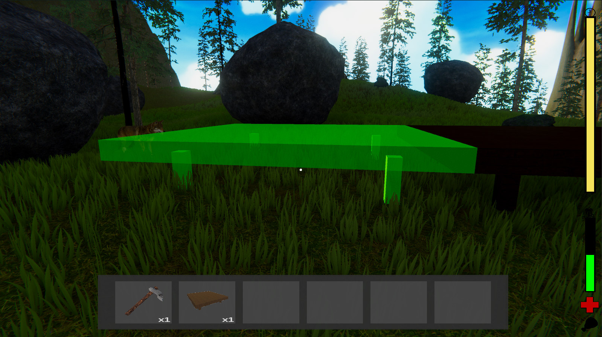
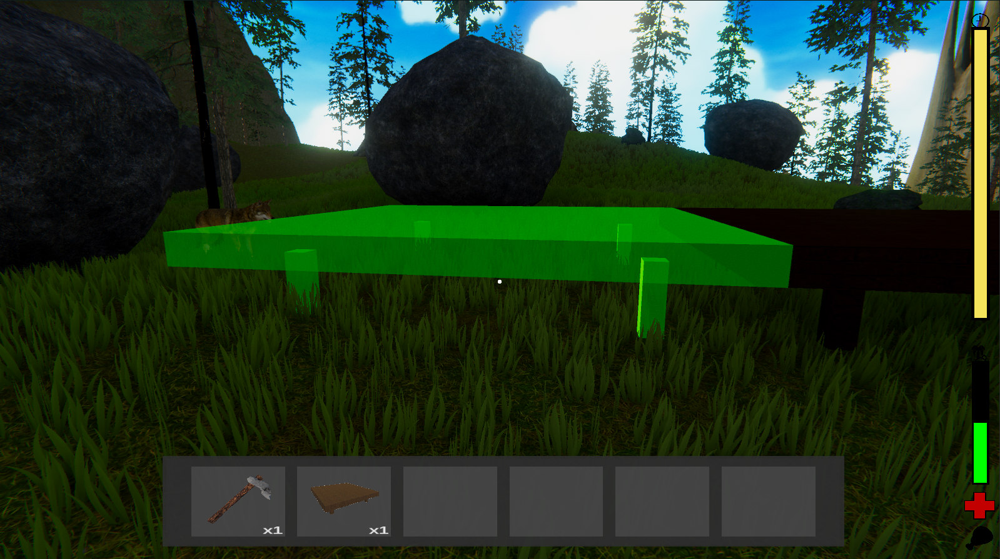
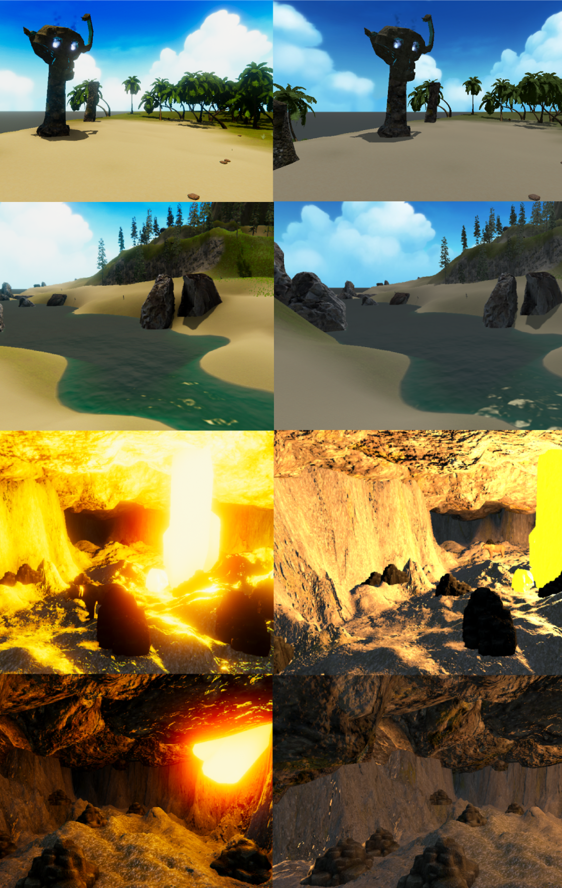
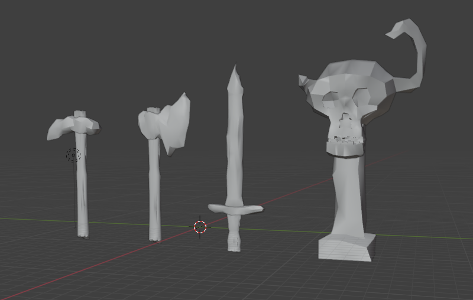

Mind's Isle

Role: Solo project
Genre: Sandbox, Survival
Engine: Unity
Platform: PC
Overview
This was a solo project to create a sandbox-style survival game where the player could explore, set their own goals, and interact with the environment. The brief emphasized the need for a dynamic world that felt alive to the player. I decided to make a game with mechanics such as crafting, player stats, and a day-night cycle. There also needed to be an element of tension to keep the player engaged, so I added a daily (in-game time) quest system that would reward or punish the player depending if they met the requirement or not. 

Here's a breakdown of the game's brief, the pitch and a miniture post-mortem:
Check out the Game Design Doc here. Note: This is a prototype game, the yellow highlighted sections of the GDD did not make it into this build.
Getting Started
Off the bat, I was having regrets about choosing this brief.
I only had 5 weeks to make an entire survival game by myself which sounded and was absolutely terrifying. I’d always wanted to make a survival game as they’re my favourite genre of game to play. I knew if I truly wanted to make it now was the time so I ignored my doubts and got straight to work.The first thing I did was write down all the systems I wanted in the game:
- Crafting System
- Building System
- Melee & Ranged Weapons
- Hunger & Health System
- Day-Night cycle
- Inventroy System
- Storage System
- Harvesting System
- Quest System
- Save System
- Item System
Game initial ideation and systems.
Island desgin and lore ideation.
Concepts for quest system quests, UI and forge model/
Loop ideation, building system and (pseudo) pseduocode.
Tutorials: Greatest enemy and hero
To approach this, like any person starting a massive project solo I headed straight to YouTube.
I made the grave mistake of following 3 different survival game tutorial series, skimming through and trying to bring all the best bits together. This was a huge mistake. I created systems that either didn't work or weren't what I wanted all because I didn’t research the results! This was insanely frustrating as I wasted almost the entire first week, throwing out everything and eventually restarting.This issue would become more relevant towards the final systems in my game when certain systems wouldn't work together at all. I had to stop relying on finding the correct tutorial and start creating my systems around what I had. I managed to do this by making the quest system completely from scratch and it really boosted my confidence for the rest of the project.
Shoutout to Thunder Dev for this awesome tutorial series, this was my biggest saviour. Check it out here!
Scriptable Objects / Inventory System
I had no idea where to begin for an inventory system. Following tutorials was helping, however, all the videos I found used things called scriptable objects which I had never heard of before. I was stumped when it came to them, and most tutorials I followed that didn’t use them didn't address a lot of the features I wanted as stacking items, picking up items, dragging/dropping items etc. I was committed to learning and understanding the logic in tutorials rather than just blindly following them and after a while, I was able to create a fully working inventory system with the help of the above-mentioned tutorials.The heart of the system uses scriptable objects to define item data (stack size, max stack, type)
Here are some of the key features of the system broken down:
- Slot management: Each slot is created using a prefab that can hold items. The slots check their state (full/empty) and update themselves accordingly.
- Hotbar management: The system ensures one slot is activated at a time in the Hotbar, and selecting the corresponding key would enable/disable the slots.
- Stacking: When picking up an item, the system checks if it already exists in a slot, if it does and can have more items added to it, it will be added. If the item cannot be added, a new slot will be used. If no slots are available, the item will instantiate into a physical in game item and be dropped onto the floor.
- Dragging and dropping: Checking if items could be combined, if they could it would combine (using the stacking logic) and if not it would swap the item slots around.
- Items, weapons and buildable: A slot was able to determine if an item was a resource, weapon or buildable by reading the item data SO. This would allow the player to hold specific items in their hands.
Here's a quick gif showing the functionality:

Post-Processing
Something really important to me was creating different atmospheres for different areas of the map.
This was my first major 3D Unity game as a solo developer. I had never majorly touched lighting or this thing called “Post-processing.” I spent a good few hours playing around with post-processing profiles and was blown away by the results. I created different profiles to help show the player underwater, in a cave, in the daytime and nighttime. Looking back on it, I'm not sure how I would've created these environments without it.  Before & After Post-ProcessingBuilding System Troubles
I was so excited to jump into this system as it’s always something I’ve loved playing around with in survival games.
This system I never want to create again, and hopefully, with the scripts I wrote for them, I won't ever have to. I created a building system similar to games like Rust and Ark Survival Evolved. It was functional in the end, but getting there was a nightmare.I scrapped 4 previous systems that I had tried making, being stuck on the first one for 4 days. I threw it all out and restarted, then quickly restarted a second time, a third time, until I landed on something that worked.
Here’s the system broken down a bit:
- Preview: When a player equips a building piece, the system generates a preview model that snaps to a grid around the first placed piece.
- Placement: The system uses raycasting to check where the piece can be placed. If the piece isn’t clipping through the environment, it appears green (buildable). If it’s invalid, it turns red (non-buildable).
- Rotation: Players can rotate the preview by right-clicking, with the rotation snapping in 30-degree increments. This was a small but necessary feature.
- Execution: If the placement is valid, the building piece is instantiated in the scene at the preview location on the grid, and the corresponding inventory slot is updated to remove the used item.
Here's a quick gif showing the functionality:

Prefabbing UI Elements
I had little experience working with setting up UI in previous games.
Buttons that switch or close a scene? Yep. Working settings UI with sliders for FOV, post-processing and graphic options, buttons to save the game, quit the game, inventories for chests and furnaces? Nope. I didn’t necessarily need any of these for the game as it was pretty close to a prototype, however, I was eager to expand my skill set. All the mentioned UI options you probably already guessed, I added them! Setting all up was much smoother than I thought, and Unity has really powerful UI tools that make this all a breeze.The biggest thing I took from this was creating prefabs for UI elements. This was something I had never considered before and doing it allowed me to create the inventory slots and all the different inventories. I did as it was something i’d picked up from a previous tutorial. Having UI prefabs made it easy to change the size of my player’s inventory, chests and furnaces without having to touch the code at all.
New software & Unity asset store
Here’s where things got extra challenging.
I didn’t have access to Maya or Photoshop anymore, so I had to learn Blender and Krita. Learning both in one night was intense, but it paid off. Krita wasn’t really a challenge but jumping into Bllender was completely different from Maya. I created all the weapon models in Blender and drew the icons in Krita. Picking up new software is always handy for future use because I always find myself picking up new techniques I can apply in other applications. For example, when watching Blender tutorials I learnt how to use the 3D cursor tool (this is in Maya but I had never used it before) which made making the models so much easier.Here are some of the assets I created:
Icons for tools (Sword, Picaxe, Hatchet)
Icons for buildables (Forge, Storage box, Foundation)
Icons for materials (Wood, Stone, Raw metal)
Icons for ranged weapons (Bow and Arrows).
 Models for the picaxe, hatchet, sword and Quest Giver in Blender.
For other assets, I turned to the Unity Asset Store. I’d avoided it in the past because I didn’t want to rely on pre-made assets, but it was necessary with the scope of this project. Another hurdle here was matching styles across assets from different creators. This was an important lesson I learnt early on looking for assets so I was able to make it work. All the assets I used from the asset store were free to use (Standard Unity Asset Store EULA) or I had purchased.
Takeaways
What I learnt on this project.
Planning is super imporant
Approaching such a big project by yourself can be overwhelming but lots of notetaking, checklists and whiteboard scheduling make a huge difference. Plan everything! Systems, timelines, art, assets, everything! Even if things don’t go exactly to plan, you’ll have a roadmap to keep you moving forward.Tutorials are OP
Watch tutorials right until the end until applying them! Whenever you use tutorials make sure you understand the code, you can’t blindly copy something and expect it to work, especially when working with so many large systems. Tutorials are the best resources ever.Some systems are just hard!
I learnt a lot from my building system, not only how to create a building system but more importantly sometimes it's easier to restart something and iterate on the idea in a second run.Post-Processing is magic
That's it that's the takeaway.Asset store isn't scary
I was extremely hesitant to use asset store assets, but with the right license, they’re a lifesaver and timesaver. I also figured out its tricky to match style when using assets from several sources, so I'll keep that in mind when using the asset store in the future.New software
Learning both Blender and Krita in one night was very hard but paid off, as it taught me I could learn the basics of programs quite quickly. This meant I was able to whip up some key models that weren't too pretty but got the job done quickly and dirty. Being open to learning new software is a mindset I willDirecting players
Directing players in an open-world game is hard! This was something I felt I didn’t do very well at. It wasn't a focus during development and that’s why I didn’t address it previously. Most people who played my game couldn’t find the cave, and the quest giver was right next to the player as they spawned which felt a bit boring. If I ever revisit this project, I’d like to focus on designing the world to guide the player to certain points of interest and write a devlog about the iteration of it.Believe in yourself! Under the right conditions, you can often surprise yourself with how much you can achieve. Creating a survival game in five weeks sounded terrifying at the start and I had so many doubts. Regardless, I kept going. This doesn’t only need to be applied in game development, but this takeaway will be applied to every aspect of my life.
Thanks for reading! If you want to download the game or see more of the game check out the itch page below :)